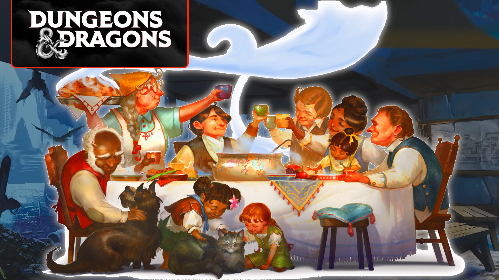
All DnD 2024 backgrounds explained
In a major shake-up to the Dungeons and Dragons rules, DnD 2024 backgrounds are now responsible for your character's ability score increases and starting feat. They still offer extra skills and backstory ideas, but they're now more crucial than ever before to your character build. This guide explains each of the new DnD backgrounds, including how they can be mixed and matched with different character options.
After DnD classes, 5e backgrounds are now the second-most important choice for your character build. DnD races play a smaller but still influential role, so be sure to keep up-to-date with their rules, too.
All DnD backgrounds explained:
What are DnD backgrounds?
Just as before, DnD backgrounds represent your character's backstory. While a class might define what your character dedicates their life to, a background explains where they're from and what their early life was like.
Are they a Noble who's used to navigating complex social politics, or are they a Charlatan who earns their bread with cunning? Both characters may have similar skill sets, but they acquired them in very different ways.
Mechanically, each 2024 background lists three DnD stats. You can choose to apply a +1 ability score increase to all three, or you can choose two to receive a +2 and a +1 increase instead. Each background also provides the following:
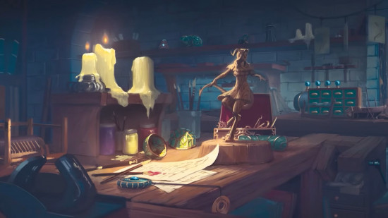
Acolyte 5e
| Ability scores | Charisma, Intelligence, Wisdom |
| Feat | Magic Initiate (Cleric) |
| Skills | Insight and Religion |
| Tools | Calligrapher's supplies |
You don't have to be a Cleric to dedicate yourself to a temple. Anyone with the DnD Acolyte background can make such holy claims.
Your dedication is rewarded with a handful of starting spells from the Cleric spell list, as well as a prayer book, holy symbol, parchment, robe, and calligrapher's supplies for your starting equipment. That starter set also gets you eight GP, but you can forgo the whole collection and start with 50 GP instead, if you like.
Honestly, we're not huge fans of the stats spread here. An Arcane Trickster Rogue might want to buff both Charisma and Intelligence, but it leaves their crucial Dexterity stat out in the cold. Clerics will avoid this one to dodge a slightly redundant feat, and Charisma casters are probably more concerned with boosting their Constitution than Intelligence or Wisdom.
Still, this is a roleplaying game, so go for this DnD background if the flavor fits.
Artisan 5e
| Ability scores | Strength, Dexterity, Intelligence |
| Feat | Crafter |
| Skills | Investigation and Persuasion |
| Tools | One kind of Artisan's Tools |
A DnD Artisan once worked as a craftsperson, so it makes sense that they'd gain the all-new Crafter feat. This gives you proficiency with three extra sets of Artisan's Tools, a 20% discount on any non-magical item you buy, and the ability to craft certain bits of equipment during a long rest.
Starting equipment includes the tool set you're proficient in, 32 GP, traveler's clothes, and two pouches for storage. Alternatively, you can start with 50 GP and do your own shopping.
Few martial builds need you to buff Strength and Dexterity, but this background does lean toward those who choose weapons over magic. Unless you're an Eldritch Knight, that is - buffing Strength and Intelligence from the get-go isn't too shabby.
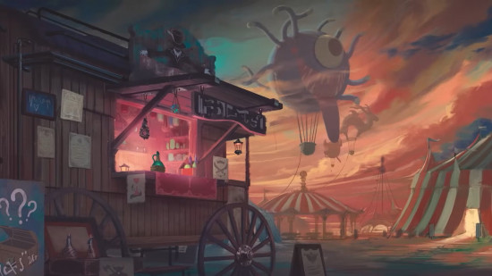
Charlatan 5e
| Ability scores | Dexterity, Constitution, Charisma |
| Feat | Skilled |
| Skills | Deception and Sleight of Hand |
| Tools | Forgery Kit |
The DnD Charlatan is the obvious pick for a Rogue character, but the Bard, Paladin, Sorcerer, or Warlock might consider it too (for the stats, not necessarily the sneaky lifestyle). As befitting your tricksy status, you'll start out with a Forgery Kit, costume, fine clothes, and 15 GP - or 50 GP, of course.
This is one of those backgrounds that might not fit your character, depending on your alignment. But don't panic - there are other DnD backgrounds with similar stats that make more sense for lawful good characters. And if they don't tickle your fancy, you could always be a reformed Charlatan.
Criminal 5e
| Ability scores | Dexterity, Constitution, Intelligence |
| Feat | Alert |
| Skills | Sleight of Hand and Stealth |
| Tools | Thieves' Tools |
They say crime doesn't pay, but the DnD Criminal background proves them all wrong. Criminals get an incredibly useful set of tools, plus one of our favorite feats (though Alert has been tweaked in the new rules).
On top of this, they get two daggers, thieves' tools, a crowbar, two pouches, traveler's clothes, and 16 GP. As long as they don't take the base 50 GP, that is.
We'd recommend this DnD background for a Rogue, Fighter, or Wizard. You'll get the most out of the stat boosts available, and even though the skills might not be super relevant for a Wizard, everyone likes to go first in combat.
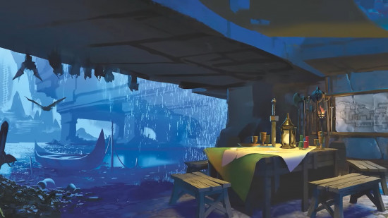
Entertainer 5e
| Ability scores | Strength, Dexterity, Charisma |
| Feat | Musician |
| Skills | Acrobatics and Performance |
| Tools | One kind of musical instrument |
Bards, Rogues, and the odd performative Paladin will make a beeline for the DnD Entertainer background. Those musical instrument proficiencies might not mean much if you don't need one as a spellcasting focus, but your Musician feat means you can play a song and give someone Inspiration during a rest. The starter kit also features two costumes, a mirror, perfume, traveler's clothes, and 11 GP (or, as always, 50 GP).
Again, it feels a bit awkward to buff both Strength and Dexterity, so we expect most builds with this DnD background to go for a +2/+1 combination. Martial classes who moonlight as the party Face will have a lot to work with here.
Farmer 5e
| Ability scores | Strength, Constitution, Wisdom |
| Feat | Tough |
| Skills | Animal Handling and Nature |
| Tools | Carpenter's Tools |
The DnD Farmer is an entirely new background, and it comes with a solid feat that makes it suitable for a wide range of classes. Buffed Constitution and an increased maximum HP? Yes please.
Your starting equipment includes a Sickle, Carpenter's Tools, Healer's Kit, Iron Pot, Shovel, Traveler's Clothes, and 30 GP. These are all very practical choices, but you can go for the 50 GP starter set if you aren't keen.
Druids, Fighters, and even Clerics and Paladins have great cause to choose the humble Farmer background. A Monk or Ranger may also be drawn to the Wis-Con combo, even if their Dexterity is sorely neglected. This is also one of the few DnD background options that really suits the Barbarian.
Guard 5e
| Ability scores | Strength, Intelligence, Wisdom |
| Feat | Alert |
| Skills | Athletics and Perception |
| Tools | One kind of gaming set |
If you want to start out with the Alert feat but hate the idea of playing a Criminal, you can take the DnD Guard background instead. We're not entirely sure who those stat increases are for (a Cleric who loves to frontline? A Wizard who lifts weights?), but they're probably doing plenty of scouting, whoever they are.
As for starting equipment, you can pick the 50 GP option or, instead, start with a spear, light crossbow, 20 bolts, a gaming set you're proficient in, hooded lantern, manacles, quiver, traveler's clothes, and 12 GP.
If you couldn't tell from the weightlifting Wizard gags, this is one of our least favorite DnD backgrounds. Alert is an excellent feat, but the background's features seem so at odds with each other. What does a gaming set and an initiative bonus have in common with those stat boosts? Not much, in our eyes.
Guide 5e
| Ability scores | Dexterity, Constitution, Wisdom |
| Feat | Magic Initiate (Druid) |
| Skills | Stealth and Survival |
| Tools | Cartographer's Tools |
The new DnD Guide background feels ready-made for the Monk, Ranger, and Fighter, and it might tempt the odd Cleric and Druid too. With stat boosts that benefit both spellcasting and martial classes, super useful proficiencies, plus that crucial Constitution buff, this looks like one of the most versatile DnD background options in the new Player's Handbook.
Your starting equipment here is either 50 GP or a shortbow, 20 arrows, Cartographer's Tools, a bedroll, a quiver, a tent, traveler's clothes, and three GP. You don't have much cash to spend in the city, but you're well prepared for long trips in the wilderness.
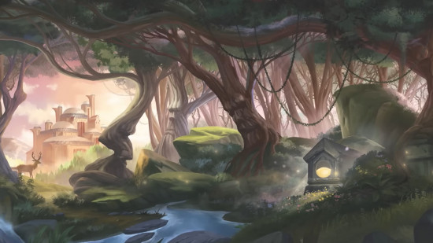
Hermit 5e
| Ability scores | Constitution, Wisdom, Charisma |
| Feat | Healer |
| Skills | Medicine and Religion |
| Tools | Herbalism Kit |
The DnD Hermit is designed for classes that want to specialize in healing. That's usually the Cleric or Druid, though Paladins and Rangers regularly get in on the action too. Thankfully, the Hermit has stat boosts to back all these classes up.
To help you achieve maximum healing, the Healer feat has had a major overhaul. Now it lets you use a Healer's Kit to heal someone as an action, meaning they can spend a Hit Point Dice and get a number of HP back that's boosted by your proficiency bonus.
It was apparently asking too much to give the Hermit a Healer's Kit straight out of the gate, though. Instead, you can start with 50 GP or a quarterstaff, a Herbalism Kit, a philosophy book, lamp, oil, traveler's clothes, and 16 GP. On the bright side, the Herbalism Kit can be used to craft a Healer's Kit.
Merchant 5e
| Ability scores | Constitution, Intelligence, Charisma |
| Feat | Lucky |
| Skills | Animal Handling and Persuasion |
| Tools | Navigator's Tools |
Want a free Lucky feat that now scales with your proficiency bonus? Pick the DnD Merchant background. Between the handy Persuasion skill and the spread of stat boosts, Charisma casters like the Sorcerer are eating well with this background. Wizards can get in on the action too, though they'll have less to do with the extra skill proficiencies.
If you don't pick the base 50 GP, your Merchant can start a campaign with Navigator's Tools, two pouches, traveler's clothes, and 22 GP. There's not too much equipment to work with, but in true Merchant fashion, you can use money to solve your problems instead.
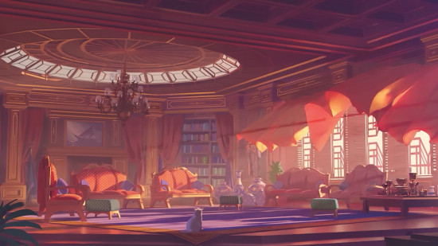
Noble 5e
| Ability scores | Strength, Intelligence, Charisma |
| Feat | Skilled |
| Skills | History and Persuasion |
| Tools | One kind of Gaming Set |
The DnD Noble gets extra proficiencies thanks to their Skilled feat, making it an ideal background for Skill Monkeys like the Rogue and the Bard. Wizards who want to be serious know-it-alls should also apply for this DnD background, as well as Fighters and Paladins who want to show off their excellent standing in society.
Instead of the basic 50 GP, you can start with a gaming set you're proficient in, fine clothes, perfume, and 29 GP. All useful in a campaign that's heavy on social intrigue and politics, but not as helpful for a dungeon crawl or wilderness trek.
Sage 5e
| Ability scores | Constitution, Intelligence, Wisdom |
| Feat | Magic Initiate (Wizard) |
| Skills | Arcana and History |
| Tools | Calligrapher's Supplies |
Characters who've spent extensive time in libraries should go for the DnD Sage background. That's usually the domain of studious Wizards, but Wisdom-based casters are also a prime choice here - especially as they can benefit from that Magic Initiate feat giving them access to the Wizard spell list.
The skills you gain proficiency in are situational at best, and they're likely to be ignored by any Cleric or Druid who dumped the Sage's Intelligence boost. However, free spells from the expansive Wizard spell list is definitely worth the trade-off.
Unless you take the base 50 GP, your Sage will start with a quarterstaff, Calligrapher's Supplies, a history book, parchment, a robe, and eight GP.
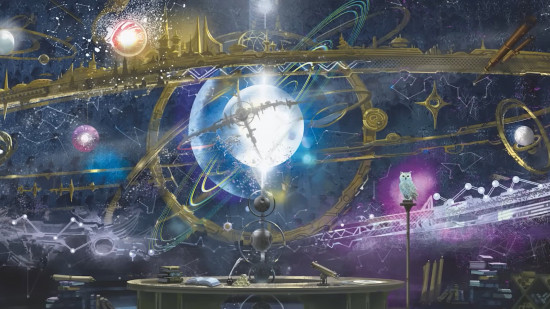
Sailor 5e
| Ability scores | Strength, Dexterity, Wisdom |
| Feat | Tavern Brawler |
| Skills | Acrobatics and Perception |
| Tools | Navigator's Tools |
We were a little nervous when we saw that the DnD Sailor background came with one of the worst feats from fifth edition. But Wizards of the Coast has made some tweaks, and Tavern Brawler is looking a little more appealing. Instead of a stat boost and the option to grapple, this feat now buffs your Unarmed Strike damage, lets you reroll 1 for said Unarmed Strikes, and can push enemies you damage five feet away.
The focus on unarmed attacks and Wisdom make this perfect for future Monk characters, or perhaps Barbarians who are keen to fight with their fists. There's enough here for Dex-based martials to work with, too. Although if you're planning a ranged build, we're not sure such a melee-focused feat will prove useful.
As for starting equipment, you can choose your own with the blanket 50 GP. Alternatively, you can begin play with a Dagger, Navigator's Tools, Rope, Traveler's Clothes, and 20 GP. Seems the pay for Sailors isn't too shabby.
Scribe 5e
| Ability scores | Dexterity, Intelligence, Wisdom |
| Feat | Skilled |
| Skills | Investigation and Perception |
| Tools | Calligrapher's Supplies |
The DnD Scribe is hugely flexible thanks to its Skilled feat and spread of stats. Whatever class you choose, your character is wise, capable, and quick. We're cooking up some Monk, Wizard, Ranger, and Fighter builds as we speak. There's no Constitution bonus to keep you beefed up, but if you plan your ability scores carefully, you can work around this.
Perception is perhaps our most-used skill in all of D&D, so we'd recommend it for any class. Investigation is slightly more situational, but it's still worth having for free. As for starting equipment, you can begin with Calligrapher's Supplies, Fine Clothes, a lamp, oil, parchment, and 23 GP. Or you can go for the classic 50 GP option.
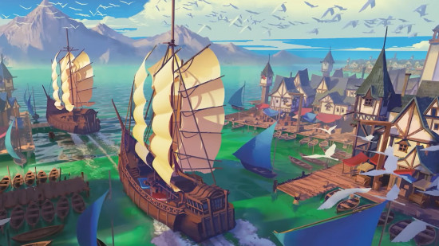
Soldier 5e
| Ability scores | Strength, Dexterity, Constitution |
| Feat | Savage Attacker |
| Skills | Athletics and Intimidation |
| Tools | One kind of Gaming Set |
The DnD Soldier background is designed to be the ultimate martial option. Sure, most Fighters and Barbarians don't need high Dexterity and Strength, but Athletics and Intimidation are classic skill options for these kinds of characters. Plus, the Savage Attacker feat is no longer limited to melee weapons - ranged builds can now join in on the fun.
Unless you pick the 50 GP option, your Soldier will start out with a spear, a shortbow, 20 arrows, a gaming set you're proficient in, a Healer's Kit, a quiver, traveling clothes, and 14 GP. That's some pretty sweet gear.
Wayfarer 5e
| Ability scores | Dexterity, Wisdom, Charisma |
| Feat | Lucky |
| Skills | Insight and Stealth |
| Tools | Thieves' Tools |
Finally, there's the DnD Wayfarer. This is for everyone who wants to start with the Lucky feat but doesn't want to play a Merchant. Wayfarers live on the fringes of society instead, often wishing for money rather than making much of it - think of them as siblings to the 5e Urchin. The stats and skills available here make this a great choice for Rangers, Rogues, Monks, and Bards.
If you're not tempted by the starting 50 GP, you can begin your game with two daggers, Thieves' Tools, any Gaming Set, a bedroll, two pouches, traveler's clothes, and 15 GP.
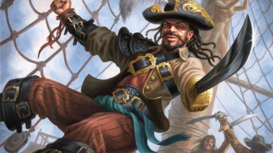
Forgotten Realms backgrounds
The 2025 book, Forgotten Realms: Heroes of Faerûn, introduces 18 additional DnD backgrounds. Many of these are linked to a particular faction or location in the official setting, but you could easily handwave that flavor away.
Here are those new background options:
Chondathan Freebooter
| Ability scores | Strength, Dexterity, Wisdom |
| Feat | Skilled |
| Skills | Athletics and Sleight of Hand |
| Tools | Weaver's Tools |
Besides its flavor ties to the land of Chondath, you might choose the Chondathan Freebooter background if you're a Wisdom caster looking to play more of a utility role in your party. We're thinking particularly of Rangers who want to do a lot of scouting and sneaking, but the feats and skills here might equally suit a Monk, or maybe even a Knowledge Cleric.
Dead Magic Dweller
| Ability scores | Strength, Constitution, Wisdom |
| Feat | Healer |
| Skills | Medicine and Survival |
| Tools | Leatherworker's Tools |
Barbarians had very few optimal background options before Wizards of the Coast released Forgotten Realms: Heroes of Faerûn. Luckily, the 2025 sourcebook came with plenty of backgrounds that boosted Strength and Constitution. Dead Magic Dweller offers these stat increases, but the focus on healing and Wisdom skills might still put a Raging brawler off. War Clerics, however, will be slightly more pleased.
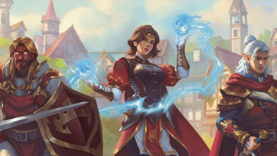
Flaming Fist Mercenary
| Ability scores | Strength, Constitution, Charisma |
| Feat | Tough |
| Skills | Intimidation and Perception |
| Tools | Smith's Tools |
The Flaming Fist are the closest thing that Baldur's Gate has to law and order, but they're a mercenary guild, meaning there's plenty of room for corruption. This means martials and Charisma casters of any alignment might join, as long as they follow the guild's creed. Flaming Fist Mercenary is a solid choice for Barbarians, Fighters, and Paladins - or maybe a squishy spellcaster who feels their max HP is too feeble.
Genie Touched
| Ability scores | Dexterity, Wisdom, Charisma |
| Feat | Magic Initiate (Wizard) |
| Skills | Perception and Persuasion |
| Tools | Glassblower's Tools |
Genie Touched characters hail from the land of Calimshan, where elementals hold profound influence. Your early encounters with these supernatural creatures have, in one way or another, given you an early affinity for magic - and an adeptness with some of D&D's best skills. All Charisma and Wisdom casters should consider this background, if it fits the backstory they had in mind.
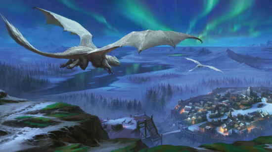
Ice Fisher
| Ability scores | Strength, Dexterity, Constitution |
| Feat | Alert |
| Skills | Animal Handling and Athletics |
| Tools | Woodcarver's Tools |
An Ice Fisher background is a humble one, where you spent your early life fishing for trout in Icewind Dale. Still, it gives you some excellent physical skills, half-decent skills, and the Alert feat - nothing to be sniffed at for martial characters.
Moonwell Pilgrim
| Ability scores | Constitution, Wisdom, Charisma |
| Feat | Magic Initiate (Druid) |
| Skills | Nature and Performance |
| Tools | Painter's Supplies |
The Moonwell Pilgrim background is tied to the Moonshae Isles and its mysterious moonwell shrines. The magical influence of this location offers you all the stats, skills, and spells that would best suit a Druid - except that it's so Druid coded that an actual Druid would have little need to take this background. A Moon Bard would also benefit from the stat spread and feat here, but there are certainly stronger backgrounds for a Bard to take.
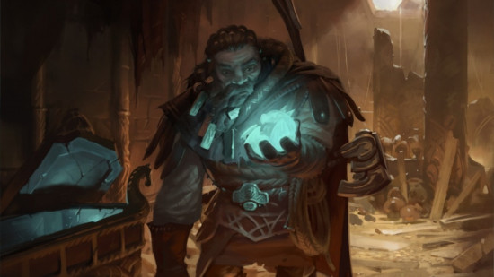
Mulhorandi Tomb Raider
| Ability scores | Dexterity, Constitution, Intelligence |
| Feat | Lucky |
| Skills | Investigation and Religion |
| Tools | Mason's Tools |
People in Mulhorand have a habit of robbing tombs (or reclaiming them, depending on your perspective). The Mulhorandi Tomb Raider background presumes that you'll need plenty of luck for this pastime, plus a decent amount of Intelligence. The Lucky feat suits pretty much any character, but Wizards and Artificers have a lot to gain here.
Mythalkeeper
| Ability scores | Intelligence, Wisdom, Charisma |
| Feat | Crafter |
| Skills | Arcana and History |
| Tools | Jeweler's Tools |
A Mythalkeeper has spent considerable time around a mythal, a source of magical power so great in can alter reality. The skills and stat increases make sense for this theme (though they're far from optimal). Still, we're not entirely sure what the Crafter feat, which grants you easy crafting for basic items and discounts while shopping, has to do with all this power. There aren't many builds we can see pursuing this background.
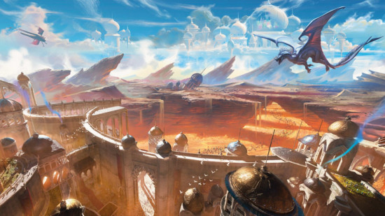
Rashemi Wanderer
| Ability scores | Strength, Constitution, Charisma |
| Feat | Tough |
| Skills | Intimidation and Perception |
| Tools | Cartographer's Tools |
A Rashemi Wanderer of Rashemen is used to harsh weather conditions, isolation, and dangerous beasts roaming the land. This has made you capable of charisma, but its more often used to intimidate than it is to please. The stats, feats, and skills here are appealing, particularly for beefy martials, defensive Paladins, and the occasional Charisma caster.
Shadowmasters Exile
| Ability scores | Dexterity, Intelligence, Charisma |
| Feat | Savage Attacker |
| Skills | Acrobatics and Stealth |
| Tools | Thieves' Tools |
A Shadowmasters Exile was part of a reclusive thieves' guild in Thesk, but for reasons that are your own, you've been expelled from their ranks. You're free to be whoever you want to be now, but you still make use of the skills the guild taught you. We're not sure that Intelligence-based characters will get much out of this background, but ignoring that rogue stat, a Bard, Warlock, or Rogue on the road to redemption makes a lot of sense.
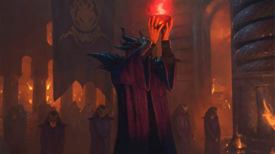
Spellfire Initiate
| Ability scores | Constitution, Intelligence, Charisma |
| Feat | Spellfire Spark |
| Skills | Arcana and Perception |
| Tools | One kind of Gaming Set |
A Spellfire Initiate has begun to learn a rare skill, the power to shape an unusual form of raw magic known as spellfire. The main attraction of this background is its feat, which allows you to cast the Sacred Flame cantrip as a bonus action and reduce incoming damage once per turn. It's pretty strong, and it's unique to this background.
Dragon Cultist
| Ability scores | Dexterity, Constitution, Intelligence |
| Feat | Cult of the Dragon Initiate |
| Skills | Deception and Stealth |
| Tools | Calligrapher's Supplies |
The Dragon Cultist is another background with a specialized feat. It's actually the first in a small tree of feats that can be unlocked as you level up. As cool as that sounds, this first feat's power is a little underwhelming: the ability to speak Draconic, and an action that can possibly frighten a nearby target. You also gain Inspiration when you manage to frighten said creature, but there's still a saving throw between you and success.
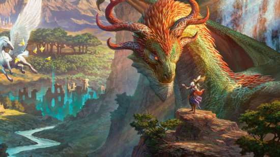
Emerald Enclave Caretaker
| Ability scores | Constitution, Intelligence, Wisdom |
| Feat | Emerald Enclave Fledgling |
| Skills | Nature and Survival |
| Tools | Herbalism Kit |
As well as some very Druidic or Wizardy stats and skills, an Emerald Enclave Caretaker always has Speak with Animals prepared thanks to their fledgling feat. They can also use the Help action to swap places with an ally within five feet, with no opportunity attacks. It's a very situational feat, but it does set you up to take the (still kind of situational) Enclave Magic feat at level four.
Harper
| Ability scores | Dexterity, Intelligence, Charisma |
| Feat | Harper Agent |
| Skills | Performance and Sleight of Hand |
| Tools | Disguise Kit |
Another faction background, the Harper offers some excellent tools for budding Bards and Rogues. Its unique feat is a disappointing tool for distracting enemies with the Help action (something we've personally never done in a D&D game, even if it is in the rules). The level-four Harper Teamwork feat you can pick up later is slightly better, but we're not sure it's worth wasting your origin feat to get there.
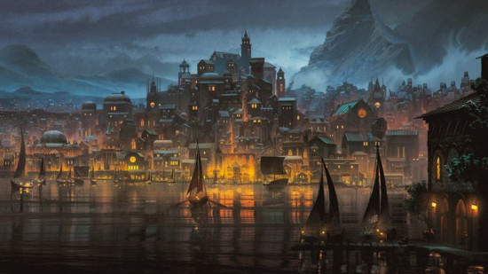
Knight of the Gauntlet
| Ability scores | Strength, Intelligence, Wisdom |
| Feat | Tyro of the Gauntlet |
| Skills | Athletics and Medicine |
| Tools | Smith's Tools |
A Knight of the Gauntlet immediately seems best-suited for a spellcasting Fighter, because few other builds would benefit from those stats. We're not even sure we'd recommend this for that character, though. An origin feat that lets you (checks notes) stop adjacent allies being pushed or pulled is honestly pretty bland. You can also give one attack roll against you disadvantage, but it costs an entire action. There's a level-four upgrade feat, but it still doesn't seem worth the cost.
Lords' Alliance Vassal
| Ability scores | Strength, Intelligence, Charisma |
| Feat | Lords' Alliance Agent |
| Skills | Insight and Persuasion |
| Tools | Calligrapher's Supplies |
A loyal Lords' Alliance Vassal has some unusual stat boosts, but they could be handy for a Bard looking to master all possible skills. The Lords' Alliance Agent feat, however, is blatantly designed for more offensive builds, as it give someone Inspiration when you land a critical hit and gives you advantage on attack rolls after seeing an enemy die. Good for some Bards, but only a select few.
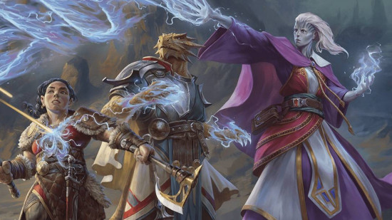
Purple Dragon Squire
| Ability scores | Strength, Wisdom, Charisma |
| Feat | Purple Dragon Rook |
| Skills | Animal Handling and Insight |
| Tools | Navigator's Tools |
The Purple Dragon Squire actually has a faction-based feat that appeals to us! Purple Dragon Rook offers an extra skill and the power to give out Inspiration every time you roll initiative. Purple Dragon Commandant, which you can pick up from level four, is even better, doling out temporary HP and giving you advantage on attack rolls while bloodied.
Zhentarim Mercenary
| Ability scores | Strength, Dexterity, Charisma |
| Feat | Zhentarim Ruffian |
| Skills | Intimidation and Perception |
| Tools | Forgery Kit |
As a dodgy member of the Zhentarim Mercenary guild, it makes sense for you to have some very Rogue-coded stat boosts and skills. Zhentarim Ruffian isn't too tied to a particular playstyle, though. It lets you donate your Inspiration if you have it when initiative is rolled, and doing so gives your beneficiary advantage on their Initiative roll. Plus, you have a better shot at rolling major damage on opportunity attacks.
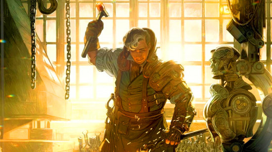
Eberron backgrounds
The 2025 book Eberron: Forge of the Artificer adds 17 new DnD backgrounds. These are setting-specific (so you'll need to ask your DM if you can use them outside of an Eberron campaign), but some come with exceptionally strong starting feats.
Aberrant Heir
| Ability scores | Strength, Constitution, Charisma |
| Feat | Aberrant Dragonmark |
| Skills | History and Intimidation |
| Tools | Disguise Kit |
You have a dragonmark, but it's weeeeiiiird. None of the houses associated with classic marks want to go near you, and you're very likely to end up living a life of crime. But, hey, at least you have the stats to beat up anyone that's mean to you - and a disguise kit to escape with.
Aberrant Dragonmark grants you a reaction that boosts saving throws, plus a Sorcerer cantrip and level-one spell. That spell also allows you to spend a Hit Point Dice to gain temporary HP. This is a neat all-rounder, and a frontliner will find plenty of value here.
Archaeologist
| Ability scores | Dexterity, Intelligence, Wisdom |
| Feat | Skilled |
| Skills | History and Survival |
| Tools | Cartographer's Tools |
If you want Lara Croft or Nathan Drake energy, this is your background. You spend as much time in a library as you do in ancient tombs, shouting 'This belongs in a museum!'
The ability score spread is a little unusual, but a Arcane Trickster, Monk, or creative Artificer could work with it. The feats and skill spread are pretty handy for a utility character, to boost.
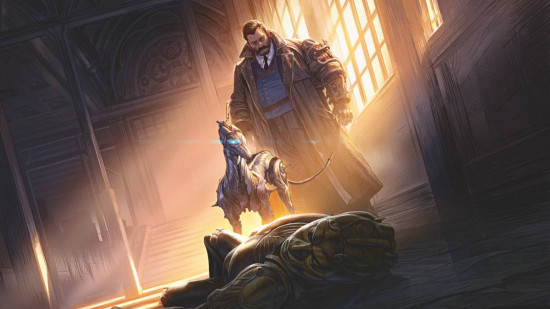
House Agent
| Ability scores | Strength, Intelligence, Charisma |
| Feat | Lucky |
| Skills | Investigation and Persuasion |
| Tools | One kind of Artisan's Tools |
A House Agent works for a dragonmarked house, but they're yet to manifest any mark of their own. Until that changes, you're stuck doing the grunt work of more powerful figureheads.
This background offers another odd stat combo, but Lucky is a strong feat on any character, whether they be Paladin, Wizard, or Artificer. The skill options are excellent, too.
House Cannith Heir
| Ability scores | Strength, Dexterity, Intelligence |
| Feat | Mark of Making |
| Skills | Investigation and Sleight of Hand |
| Tools | One kind of Artisan's Tools |
A scion of House Cannith carries a legacy of invention, business, and politics. You can also carry a lot thanks to your beefy physical scores (though Intelligence has its uses, too). The skill spread here is decent, and we're pretty keen on the Mark of Making.
This origin feat sounds like it would be all about utility, and it is, but it also offers some excellent offensive spells. That includes Spiritual Weapon and Conjure Barrage. When you don't feel like choosing violence, feel free to go back to spamming Mending and Identify.
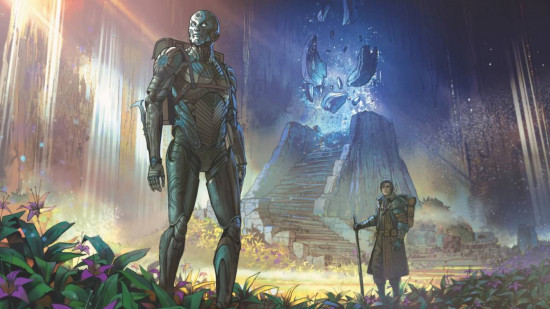
House Deneith Heir
| Ability scores | Strength, Constitution, Wisdom |
| Feat | Mark of Sentinel |
| Skills | Insight and Perception |
| Tools | One kind of Gaming Set |
A House Deneith Heir is expected to be disciplined, yet always ready for combat. Mechanically, that manifests as a background with fantastic defense capabilities. Constitution already beefs you up, but the spell list is the real star.
You always have shield prepared - something most characters would benefit from. Beyond that, we have Compelled Duel, Shield of Faith, Warding Bond, Death Ward, and even Counterspell. Imagine a Monk with the tanking skills of a Paladin. Alright, maybe not in the clunky armor, but close!
House Ghallanda Heir
| Ability scores | Dexterity, Wisdom, Charisma |
| Feat | Mark of Hospitality |
| Skills | Insight and Persuasion |
| Tools | Cook's Utensils |
Pleasant social situations are House Ghallanda's bread and butter, and their stats and skills reflect this. Every party needs a face, so none of these skills are to be sniffed at - not even your Cook's Utensils.
Even your Mark of Hospitality makes you someone everyone wants to be friends with. Gooberry, Aid, Create Food and Water, Leomund's Tiny Hut, and Mordenkainen's Private Sanctum all become available to you as spells. This isn't the best spell list for an optimizer, but it can be a life-saver in campaigns where surviving has long been a grueling task.
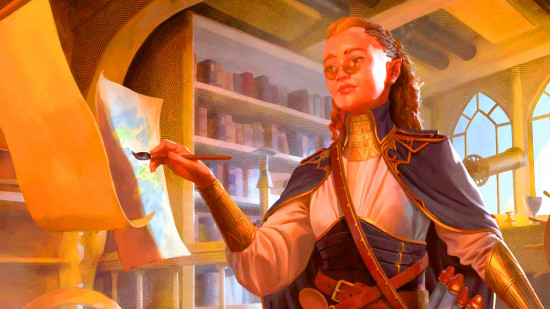
House Jorasco Heir
| Ability scores | Dexterity, Constitution, Wisdom |
| Feat | Mark of Healing |
| Skills | Medicine and Stealth |
| Tools | Herbalism Kit |
House Jorasco is Eberron's healing-focused factions. Hence, the stats and skills suited to any Cleric, Druid, or particularly heal-y Monk. Stealth is a nice bonus here that makes up for how situational Medicine can be as a skill.
Shocking no one, the Mark of Healing gives you healing spells! All the hits are here, to the point where giving this background to a Life Cleric would be pretty damned redundant. You're more likely to join House Jorasco as a martial who wants to help play the role of party healer.
House Kundarak Heir
| Ability scores | Strength, Constitution, Intelligence |
| Feat | Mark of Warding |
| Skills | Arcana and Investigation |
| Tools | Thieves' Tools |
House Kundarak is a stronghold of valuable items, and protecting that instills a sense of honor in its members. The skills here are okay, but not the most widely useful. The origin feat tells a similar story.
Most of your new spells focus on abjuration and protection. That includes Mage Armor, Arcane Lock, Sanctuary, Armor of Agathys, Glyph of Warding, and so on. These are excellent freebies, but the Mark of Warding is far from our favorite Dragonmark.
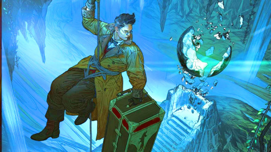
House Lyrandar Heir
| Ability scores | Strength, Dexterity, Charisma |
| Feat | Mark of Storm |
| Skills | Acrobatics and Nature |
| Tools | Navigator's Tools |
House Lyrandar holds dominion over the sea and sky. That's a tough concept to represent with stats and skills, but D&D has done its best. The result is some nice options for (once again) a Paladin, or perhaps a Bard or Rogue. The skills are meh, but if you're going for a skill monkey character, that shouldn't hurt you too much.
Mark of Storm grants access to one of D&D 5.5e's most powerful spells, Conjure Minor Elementals. The rest of the spell list is hit-and-miss. Fog Cloud, Feather Fall, and Shatter are pretty good, but we can't remember the last time we cast Control Water.
House Medani Heir
| Ability scores | Dexterity, Intelligence, Wisdom |
| Feat | Mark of Detection |
| Skills | Insight and Investigation |
| Tools | Disguise Kit |
House Medani is all about subterfuge. Luckily, that means you get lots of handy proficiencies, and a pretty versatile stat spread. Mark of Detection is mostly about utility: navigation, telepathy, and learning helpful information. That's good stuff for any campaign, and these spells don't need to take up the space you'd otherwise give to offensive and defensive options.
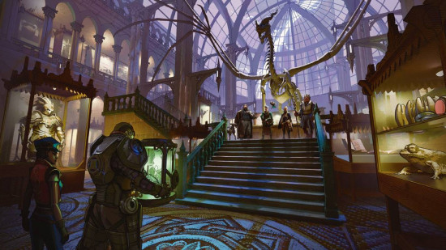
House Orien Heir
| Ability scores | Dexterity, Constitution, Intelligence |
| Feat | Mark of Passage |
| Skills | Acrobatics and Athletics |
| Tools | Cartographer's Tools |
House Orien is the house of trade routes and railways. Maybe you have a merchant background, or you're a born wanderer. Either way, you're predisposed to agility - and the Intelligence stat boost that almost everyone in Eberron has. Eat your heart out, Wizards and Artificers.
As for Mark of Passage, you have a lot of maneuverability in your spell list. Misty Step, Find Steed, Pass Without Trace, and Dimension Door are all here. It's a strong spell list that could make a frontliner even zippier on the battlefield - or a squishy spellcaster harder to catch.
House Phiarlan Heir
| Ability scores | Dexterity, Wisdom, Charisma |
| Feat | Mark of Shadow |
| Skills | Deception and Stealth |
| Tools | Disguise Kit |
Members of House Phiarlan seek knowledge, but that's as likely to be artistic knowledge as it is academic. There's also a bit of espionage in the family history, so Bards are as welcome as Rogues. Those proficiencies, plus the Mark of Shadow feat, betray the shady underbelly of this house. Darkness, Diguise Self, Pass Without Trace, and Greater Invisibility all appear on its spell list.
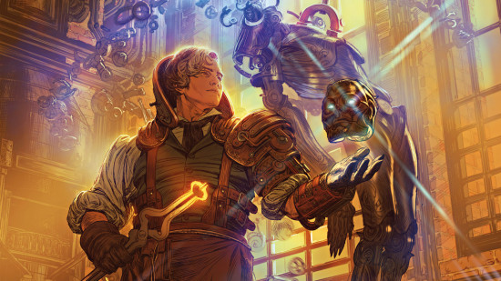
House Sivis Heir
| Ability scores | Intelligence, Wisdom, Charisma |
| Feat | Mark of Scribing |
| Skills | History and Perception |
| Tools | Calligrapher's Supplies |
House Sivis cares a lot about civilization and order, so bear that in mind when you're deciding your alignment. As for your build, you'll need to bear in mind that none of these ASIs complement each other. At least the skill proficiencies are useful.
The Mark of Scribing feat is less exciting. You have lots of utility spells focused on communication, and Silence can be a game-changer when fighting spellcasters, but there's not much to scribe home about.
House Tharashk Heir
| Ability scores | Constitution, Intelligence, Wisdom |
| Feat | Mark of Finding |
| Skills | Perception and Survival |
| Tools | One kind of Gaming Set |
House Tharashk has less of a clear gimmick compared with other Eberron houses. Your family cares about intangible things like "spirit", "self-reliance", and "destiny". Basically, build any kind of Intelligence or Wisdom caster you like.
Both skills are useful for scouting, and the Mark of Finding marches to a similar beat. You'll gain access to Hunter's Mark, a lovely freebie for an origin feat. The extended spell list, from Faerie Fire to Commune with Nature, is more situational, though.
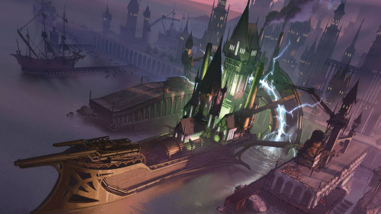
House Thuranni Heir
| Ability scores | Dexterity, Intelligence, Charisma |
| Feat | Mark of Shadow |
| Skills | Performance and Stealth |
| Tools | One kind of Musical Instrument |
This is another espionage house - boy, there seem to be a lot of those in Eberron. That means Charisma and Dexterity focus, with the obligatory Artificer Intelligence. It also means Mark of Shadow - a feat we discussed earlier, and which offers a pretty fantastic spell list for subterfuge.
House Vadalis Heir
| Ability scores | Constitution, Wisdom, Charisma |
| Feat | Mark of Handling |
| Skills | Animal Handling and Nature |
| Tools | Herbalism Kit |
House Vadalis values family, and it respects nature. Druids, Monks, and select Clerics will be well at home here. Plus, thanks to Mark of Handling, this is a great background for anyone who wants to hang out with animals all day. Animal Friendship, Speak With Animals, Find Familiar, Beast Sense, Conjure Animals, and Dominate Beast are all at your disposal.
Inquisitive
| Ability scores | Constitution, Intelligence, Charisma |
| Feat | Alert |
| Skills | Insight and Investigation |
| Tools | Thieves' Tools |
A more general background, the Inquisitive is the detective of the D&D world. You're a good judge of character, and you always notice important details. The feat reflects this thematically, and it's one that's handy for most characters, though martials will probably get the most out of it.
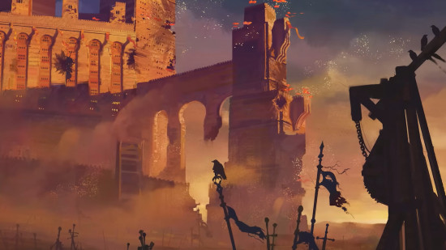
Custom background 5e
If the official backgrounds feel too restrictive, it's perfectly possible to cook up a custom DnD background instead. Chapter two of the 2024 Player's Handbook suggests using backgrounds from older (2014 rules) books as a jumping-off point:
- Use the same proficiencies as the 2014 background;
- Gain any extra talents or equipment provided by your 2014 background;
- Increase the ability scores of your choice (either three by +1 or two by +2 and +1);
- Gain an Origin feat of your choice if your background doesn't already provide a feat.
Here are a few of the best DnD backgrounds from the 2014 rules that you might want to convert:
- Anthropologist - Can communicate with any creature who they don't share a language with, provided they spend a day studying them.
- Folk Hero - Has the power to summon commoners to aid them when in trouble, and always has somewhere safe to stay among the people.
- Giant Foundling - Offers an excellent feat, extra languages, and Giant-themed roleplaying inspiration.
- Haunted One - Commoners will rush to your aid if battle goes wrong, and you get the spookiest backstory in all of D&D.
- Pirate - Has the power to get away with petty crimes scot-free.
- Rakdos Cultist - A rare background that actually offers extra spells.
- Urban Bounty Hunter - Strong proficiencies and a free contact in every city you visit who can provide useful information.
- Urchin - Can move at double their usual speed through a city as long as they aren't in combat.
If you want complete control, the steps to create a DnD background change slightly:
- Gain proficiency with any two skills and any one tool;
- Increase the ability scores of your choice (either three by +1 or two by +2 and +1);
- Gain an Origin feat of your choice;
- Gain 50 GP as your starting equipment.
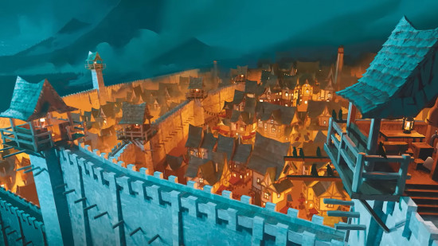
Choosing a DnD background
As backgrounds can only buff certain ability scores, many are best suited to a limited range of classes:
| 2024 class | Best DnD backgrounds |
| Barbarian | Soldier, Farmer |
| Bard | Charlatan, Entertainer, Wayfarer |
| Cleric | Farmer, Guide, Hermit, Sage |
| Druid | Farmer, Hermit, Sage |
| Fighter | (Strength-based) Farmer, Soldier, (Dexterity-based) Charlatan, Criminal, Guide, Soldier |
| Monk | Guide, Criminal, Farmer, Hermit, Sage, Sailor, Scribe, Soldier, Wayfarer |
| Paladin | Charlatan, Entertainer, Farmer, Hermit, Merchant, Noble, Soldier |
| Ranger | Charlatan, Guide, Criminal, Farmer, Hermit, Sage, Sailor, Scribe, Soldier, Wayfarer |
| Rogue | Charlatan, Criminal, Guide, Soldier |
| Sorcerer | Charlatan, Hermit, Merchant |
| Warlock | Charlatan, Hermit, Merchant |
| Wizard | Criminal, Merchant |
These recommendations are based on the main stats you'll want to buff for your character build. You might instead want to choose your DnD background based on the feat it gives you:
| DnD background | Origin feat | Origin feat explained |
| Acolyte | Magic Initiate (Cleric) | You learn two cantrips and a level-one spell from the Cleric spell list, the latter of which can be cast without a spell slot once per long rest. You can choose your spellcasting ability. |
| Artisan | Crafter | Gain proficiency with three Artisan's Tools, a 20% discount on all non-magical items, and the ability to craft certain gear during a long rest. |
| Charlatan | Skilled | Gain proficiency with any three skills and/or tools. |
| Criminal | Alert | You add your proficiency bonus to initiative rolls and can swap your initiative with a willing ally. |
| Entertainer | Musician | Gain proficiency with three musical instruments, as well as the ability to give allies Heroic Inspiration on a short or long rest (number of allies affected equals your proficiency bonus). |
| Farmer | Tough | Your HP maximum increases by an amount equal to twice your character level. After this, your HP maximum increases by two extra points each time you level up. |
| Guard | Alert | You add your proficiency bonus to initiative rolls and can swap your initiative with a willing ally. |
| Guide | Magic Initiate (Druid) | You learn two cantrips and a level-one spell from the Druid spell list, the latter of which can be cast without a spell slot once per long rest. You can choose your spellcasting ability. |
| Hermit | Healer | You can use a Healer's Kit to roll a target's Hit Dice on their behalf and restore that much HP plus your proficiency bonus. Plus, you can reroll any 1 on a die rolled to restore HP. |
| Merchant | Lucky | You have luck points equal to your proficiency bonus that can be spent to give a d20 roll advantage or disadvantage. You regain uses on a long rest. |
| Noble | Skilled | Gain proficiency with any three skills and/or tools. |
| Sage | Magic Initiate (Wizard) | You learn two cantrips and a level-one spell from the Wizard spell list, the latter of which can be cast without a spell slot once per long rest. You can choose your spellcasting ability. |
| Sailor | Tavern Brawler | Your unarmed strikes deal bludgeoning damage equal to 1d4 plus your Strength modifier, and you have proficiency with improvised weapons. You can also reroll any 1 on an unarmed strike damage die, and you can push a creature as well as deal damage when you hit with an unarmed strike attack action on your turn. |
| Scribe | Skilled | Gain proficiency with any three skills and/or tools. |
| Soldier | Savage Attacker | Once per turn when you hit a target with a weapon, you can roll its damage twice and use either roll. |
| Wayfarer | Lucky | You have luck points equal to your proficiency bonus that can be spent to give a d20 roll advantage or disadvantage. You regain uses on a long rest. |
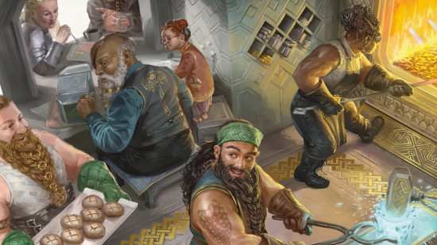
All 2014 DnD backgrounds
Maybe you're looking for more custom background ideas, or maybe you just want to play with fifth editions old background rules. Whatever your reasons, here's a summary of all DnD backgrounds from the 2014 rules.
| Background name | Skill proficiencies | Feature | Found in |
| Acolyte | Insight, Religion | Shelter of the Faithful | Player's Handbook |
| Anthropologist | Insight, Religion | Adept Linguist | Tomb of Annihilation |
| Archaeologist | History, Survival | Historical Knowledge | Tomb of Annihilation |
| Astral Drifter | Insight, Religion | Divine Contact | Spelljammer: Adventures in Space |
| Athlete | Athletics, Acrobatics | Echoes of Victory | Mythic Odysseys of Theros |
| Azorius Functionary | Insight, Intimidation | Legal Authority | Guildmasters' Guide to Ravnica |
| Boros Legionnaire | Athletics, Intimidation | Legion Station | Guildmasters' Guide to Ravnica |
| Celebrity Adventurer's Scion | Perception, Performance | Name Dropping | Acquisitions Incorporated |
| Charlatan | Deception, Sleight of Hand | False Identity | Player's Handbook |
| City Watch / Investigator | Athletics, Investigation, Insight | Watcher's Eye | Sword Coast Adventurer's Guide |
| Clan Crafter | History, Insight | Respect of the Stout Folk | Sword Coast Adventurer's Guide |
| Cloistered Scholar | History, plus one of Arcana, Nature, or Religion | Library Access | Sword Coast Adventurer's Guide |
| Courtier | Insight, Persuasion | Court Functionary | Sword Coast Adventurer's Guide |
| Criminal | Deception, Stealth | Criminal Contact | Player's Handbook |
| Dimir Operative | Deception, Stealth | False Identity | Guildmasters' Guide to Ravnica |
| Entertainer | Acrobatics, Performance | By Popular Demand | Player's Handbook |
| Faceless | Deception, Intimidation | Dual Personalities | Baldur's Gate: Descent into Avernus |
| Faction Agent | Insight and 1 Wis, Int, or Cha skill of your choice | Safe Haven | Sword Coast Adventurer's Guide |
| Failed Merchant | Investigation, Persuasion | Supply Chain | Acquisitions Incorporated |
| Far Traveler | Insight, Perception | All Eyes on You | Sword Coast Adventurer's Guide |
| Feylost | Deception, Survival | Feywild Connection | The Wild Beyond the Witchlight |
| Fisher | History, Survival | Harvest the Water | Ghosts of Saltmarsh |
| Folk Hero | Animal Handling, Survival | Rustic Hospitality | Player's Handbook |
| Gambler | Deception, Insight | Never Tell Me The Odds | Acquisitions Incorporated |
| Gate Warden | Persuasion, Survival | Planar Infusion | Planescape: Adventures in the Multiverse |
| Giant Foundling | Intimidation, Survival | Strike of the Giants | Bigby Presents: Glory of the Giants |
| Gladiator | Acrobatics, Performance | By Popular Demand | Player's Handbook |
| Golgari Agent | Nature, Survival | Undercity Paths | Guildmasters' Guide to Ravnica |
| Gruul Anarch | Animal Handling, Athletics | Rubblebelt Refuge | Guildmasters' Guide to Ravnica |
| Grinner | Deception, Performance | Ballad of the Grinning Fool | Explorer's Guide to Wildemount |
| Guild Artisan | Insight, Persuasion | Guild Membership | Player's Handbook |
| Haunted One | Choose two from: Arcana, Investigation, Religion, or Survival | Heart of Darkness | Curse of Strahd |
| Hermit | Medicine, Religion | Discovery | Player's Handbook |
| House Agent | Investigation, Persuasion | House Connections | Wayfinder's Guide to Eberron |
| Inheritor | Survival, plus one of: Arcana, History, or Religion | Inheritance | Sword Coast Adventurer's Guide |
| Investigator | Choose two from: Insight, Investigation, or Perception | Official Inquiry | Van Richten's Guide to Ravenloft |
| Izzet Engineer | Arcana, Investigation | Urban Infrastructure | Guildmasters' Guide to Ravnica |
| Knight | History, Persuasion | Retainers | Player's Handbook |
| Knight of Solamnia | Athletics, Survival | Squire of Solamnia | Dragonlance: Shadow of the Dragon Queen |
| Knight of the Order | Persuasion, plus Arcana, History, Nature, or Religion | Knightly Regard | Sword Coast Adventurer's Guide |
| Lorehold Student | History, Religion | Lorehold Initiate | Strixhaven: A Curriculum of Chaos |
| Mage of High Sorcery | Arcana, History | Initiate of High Sorcery | Dragonlance: Shadow of the Dragon Queen |
| Marine | Athletics, Survival | Steady | Ghosts of Saltmarsh |
| Mercenary Veteran | Athletics, Persuasion | Mercenary Life | Sword Coast Adventurer's Guide |
| Noble | History, Persuasion | Position of Privilege | Player's Handbook |
| Orzhov Representative | Intimidation, Religion | Leverage | Guildmasters' Guide to Ravnica |
| Outlander | Athletics, Survival | Wanderer | Player's Handbook |
| Pirate | Athletics, Perception | Bad Reputation | Player's Handbook |
| Plaintiff | Medicine, Persuasion | Legalese | Acquisitions Incorporated |
| Planar Philosopher | Arcana plus one other | Conviction | Planescape: Adventures in the Multiverse |
| Prismari Student | Acrobatics, Performance | Prismari Initiate | Strixhaven: A Curriculum of Chaos |
| Quandrix Student | Arcana, Nature | Quandrix Initiate | Strixhaven: A Curriculum of Chaos |
| Rakdos Cultist | Acrobatics, Performance | Fearsome Reputation | Guildmasters' Guide to Ravnica |
| Rewarded | Insight, Persuasion | Fortune's Favor | The Book of Many Things |
| Rival Intern | History, Investigation | Inside Informant | Acquisitions Incorporated |
| Ruined | Stealth, Survival | Still Standing | The Book of Many Things |
| Rune Carver | History, Perception | Rune Shaper | Bigby Presents: Glory of the Giants |
| Sage | Arcana, History | Researcher | Player's Handbook |
| Sailor | Athletics, Perception | Ship's Passage | Player's Handbook |
| Selesnya Initiate | Nature, Persuasion | Conclave's Shelter | Guildmasters' Guide to Ravnica |
| Shipwright | History, Perception | I'll Patch It! | Ghosts of Saltmarsh |
| Silverquill Student | Intimidation, Persuasion | Silverquill Initiate | Strixhaven: A Curriculum of Chaos |
| Simic Scientist | Arcana, Medicine | Researcher | Guildmasters' Guide to Ravnica |
| Smuggler | Athletics, Deception | Down Low | Ghosts of Saltmarsh |
| Soldier | Athletics, Intimidation | Military Rank | Player's Handbook |
| Urban Bounty Hunter | Choose two from: Deception, Insight, Persuasion, or Stealth | Ear To The Ground | Sword Coast Adventurer's Guide |
| Urchin | Sleight of Hand, Stealth | City Secrets | Player's Handbook |
| Uthgardt Tribe Member | Atheltics, Survival | Uthgardt Heritage | Sword Coast Adventurer's Guide |
| Waterdhavian Noble | History, Persuasion | Kept in Style | Sword Coast Adventurer's Guide |
| Wildspacer | Athletics, Survival | Wildspace Adaptation | Spelljammer: Adventures in Space |
| Witchlight Hand | Performance, Sleight of Hand | Carnival Fixture | The Wild Beyond the Witchlight |
| Witherbloom Student | Nature, Survival | Witherbloom Initiate | Strixhaven: A Curriculum of Chaos |
What to chat more about D&D rules and builds? Join a like-minded group of fans in the official Wargamer Discord.
Originally published on Wargamer.


{kind=link}
Leave a Comment